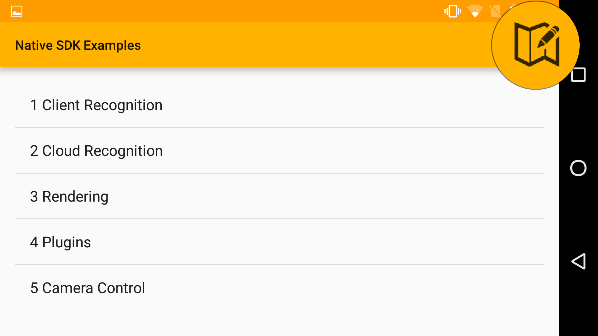
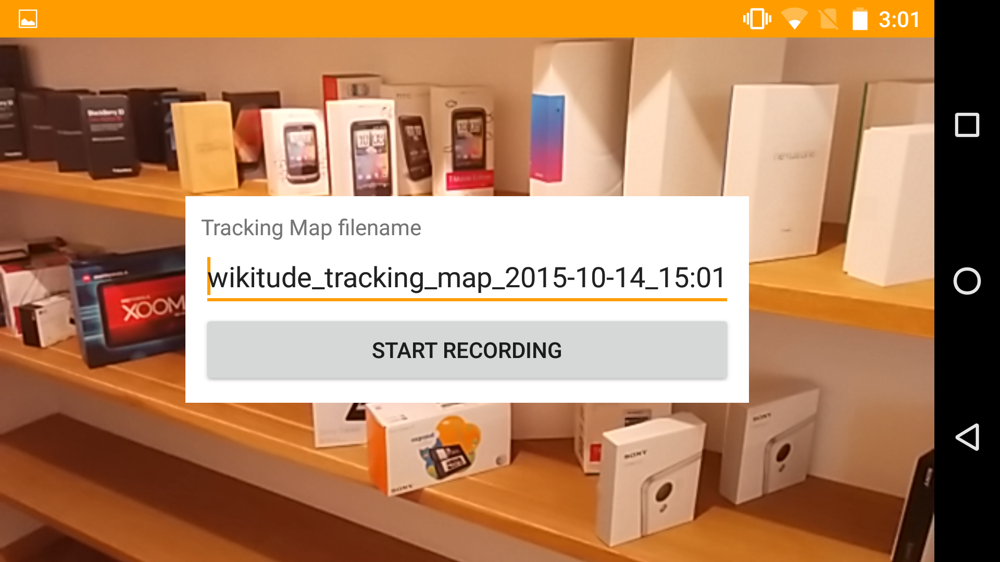
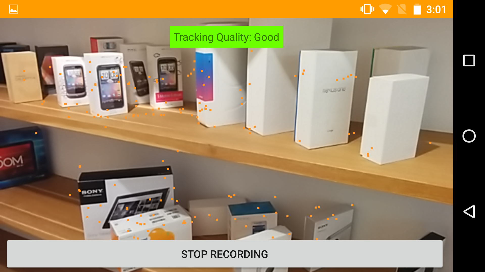
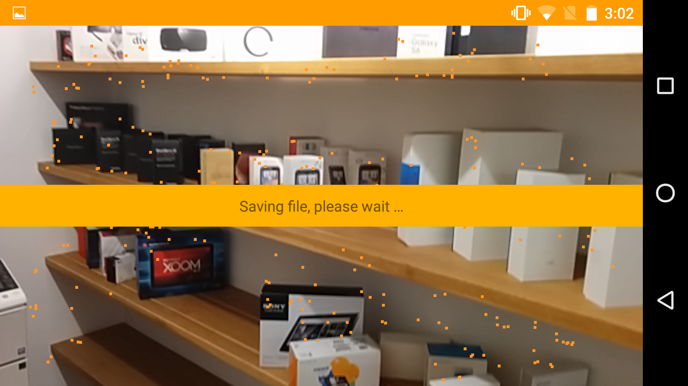
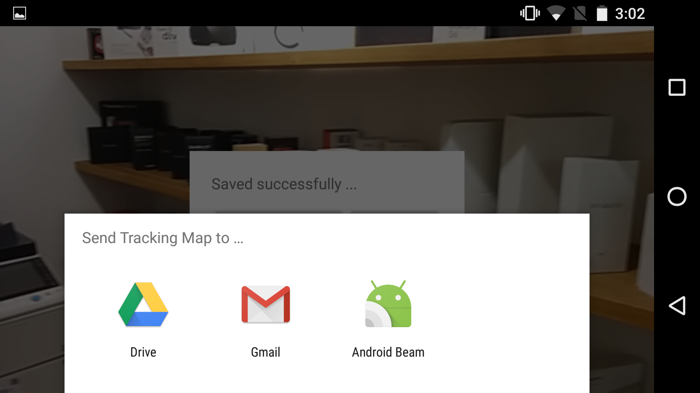
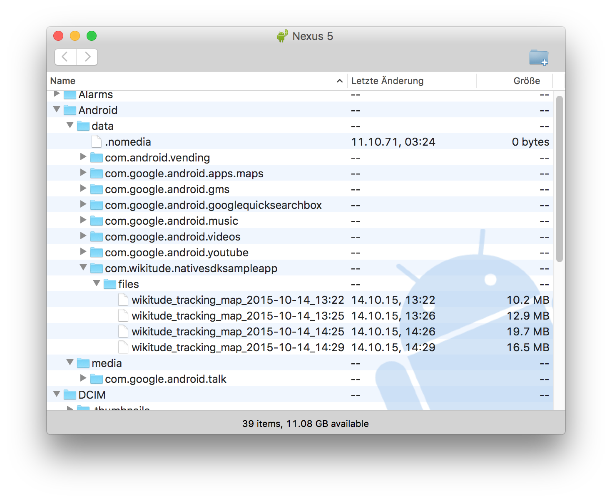

Creating 3D Tracking Maps
To be able to use 3D Tracking in your Wikitude powered application, you will need to create a so called Tracking Map. This Tracking Map is a simple file (.wtm file) which contains all the information needed by the Wikitude SDK to track the 3D objects of your choice. Similar to a .wtc file you might know from 2D tracking you later have the choice of packaging the Tracking Map file within your app or store it on a web server and let the Wikitude SDK download it.
Using the Wikitude Android Example Application to record Tracking Maps
To use the Wikitude example application to record a Tracking Map, first download the Wikitude Native SDK release package and install the example application using the provided apk in the folder "Examples/NativeSDKSampleApp/apk".
- Open the Wikitude SDK (Native API) Example Application
- Click on "Tracking Map Recorder" icon at the top-right of the screen
- Now position your device so that the objects you would like to track are visible on the screen.
- When you are ready click on "Start Recording" to begin the recording.
- After you captured everything you would like to track with this particular map, click on "Stop Recording"
- As soon as the map was saved successfully you will be presented a share dialog with which you are able to transfer your map to any supported service (e.g. Google Drive, Mail, ....)
- Alternatively you can also connect your Android device to your computer and look for the .wtm files in the folder
Android > data > com.wikitude.nativesdksampleapp > files
Note: You might need to restart your mobile capture device to actually see the files.
    
Quality of the Tracking Map
The Map recorder and the 3D Tracking sample in the sample app both include a high-level quality indicator, when you record a map. This quality indicator gives you a first estimate how well the tracking performance will be. There are tree levels, which will be displayed
- Bad: There are too few points available to recognize and track the object
- Average: There are few points available to recognize and track the object. This will result in increased shaking and varying recognition results.
- Good: The algorithm has found enough points to recognize and track the object
Check out the guide 3D Tracking Guidelines and best practices how to come to a decent recognition and tracking result.
Editing a recorded Tracking Map
During the beta phase of 3D tracking it is not possible to edit the tracking map after it has been saved.